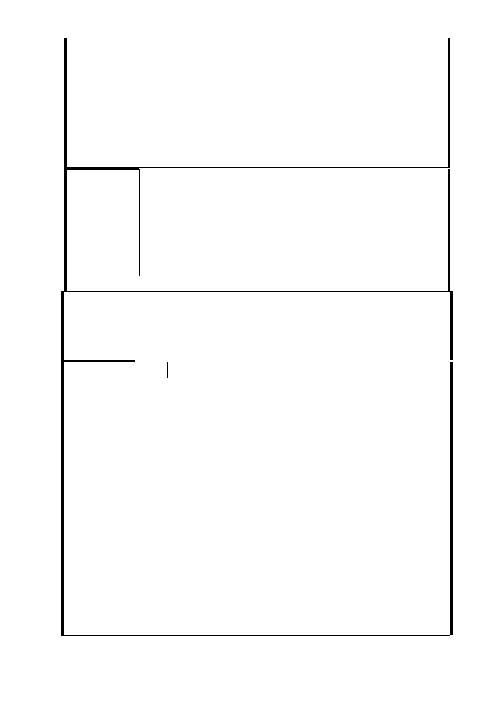

車位分配比例係依一般不動產方式持有，且因停車位之價
值將計入開發總價值中，由各參與開發者分配，未來若地
主想取得車位，則需以可分配權值折算。
3.有關基地南側緊鄰山坡地之 8 米巷道非於本土地開發區
範圍，另道路開闢事宜，屬本府新建工程處之權責。
委 員 會 決 議 同「市府回應意見」。
編 號 6 陳情人 鍾子敬（R03 捷三）
1、變更地目，提高容積率：原地目為住三，容積率為 225
％，為配合捷運共構案，應予變更地目為商業用地，以
陳情理由
提高容積率至 800％或 900％，俾創造更美好市容及捷運
建築。
2、慎選建商，公正透明：應公開招標比價，爭取原住戶最
高利益，作業公正透明，為民謀福。
建議辦法
市府回應 意
見
同編號 3 研析意見。
委 員 會 決 議 同「市府回應意見」。
編 號 6-1 陳情人 鍾子敬（R03 捷三）
一、提高容積率、變更地目
捷運車站為地標性之永久建築，絕非單純之車輛通道，
亦不可類諸行人出入口；況且任一車站，均應視為城市
文化櫥窗。故設計規劃之初，即不必被原本土地使用區
分，或容積率所侷限；既為公共建築，大可盡情揮灑，
突破創新，力求美善，相信居民斷不致惡意刁難，而屈
就淪為平民住宅；否則，將如何襯托投資百億、千億，
為人稱頌之捷運系統！更遑論展現城市文化之軟實力。
陳 情 理 由 二、公正、公開、透明
聯開案原即複雜，捷運公司、營造包商、建築投資者以
及原有百餘地主等等，皆各有私心，各擁山頭；經辦人
員本已難為，加之舊識新知，莫不竭力攀親帶故，企求
利益。萬望主管機關勉勵所屬，無論公私場合，切勿礙
於情面，而單獨以各種方式連絡，與人不當商討協議，
私相授受，有失公正；凡事應公開討論，難處可共同協
商，會議必有記錄，內容絕對透明；幸勿以私誼害公義，
不因瓜田遭牽累！
- 79 -